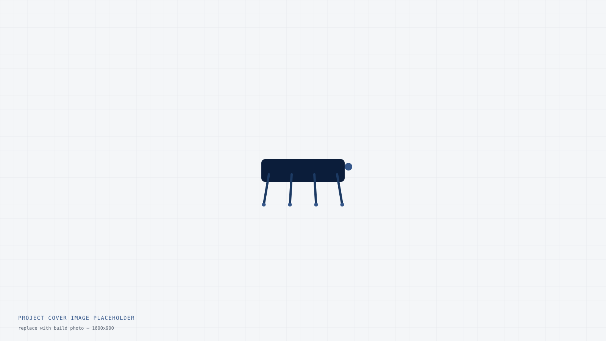

Quadruped Mk. II

This is a template project page — replace this text with your own build write-up. Aaed Musa's site pairs each YouTube video with a deeper technical breakdown; this version is meant to stand on its own as a written build log, no video required.
Overview
Describe the goal of the build here: what problem it solved, what made it different from the first version, and what the performance target was.
Design
Walk through the CAD process, key design decisions, and any trade-offs — for example, why a particular linkage geometry or motor was chosen over the alternatives.
- Leg linkage: five-bar mechanism for a larger workspace at low mass
- Actuation: custom BLDC gimbal motors run as direct-drive joints
- Structure: CNC-cut 6061 aluminum frame, 3D-printed leg segments
Build & Fabrication
Document what actually happened on the bench — what fit right the first time, what needed a second revision, and any manufacturing lessons worth remembering next time.
Results
Summarize how it performed against the goal, include any test data, and note what you'd change in a Mk. III.
More builds like this
Browse the rest of the projects on this site.